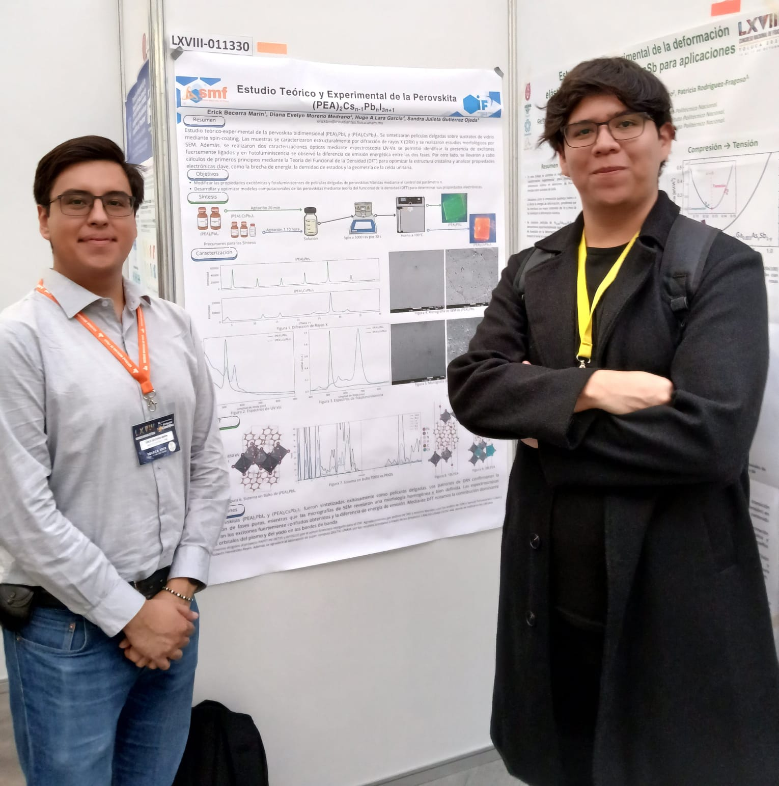
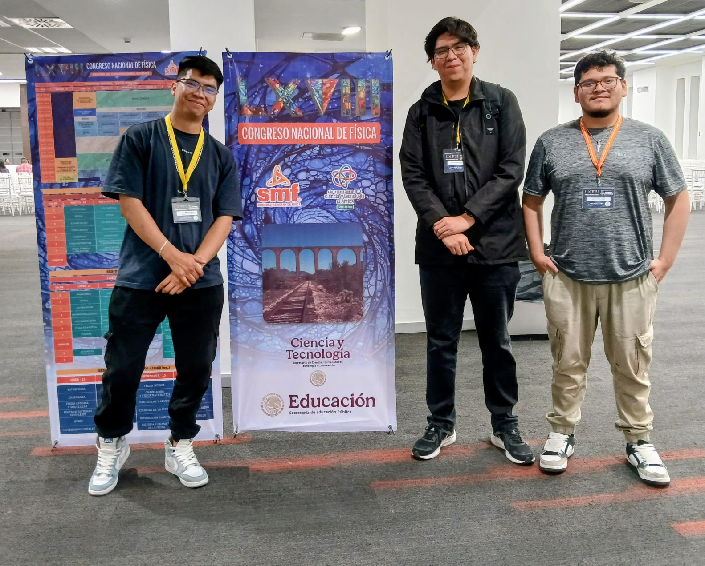

AzoNet — Thin-Film Thickness Prediction
Overview
Transparent conductive oxides (TCOs) are wide-bandgap semiconductors that combine high optical transparency with remarkable electrical conductivity, making them essential in LEDs, photovoltaics, flat-panel displays, and touch screens. While indium tin oxide (ITO) dominates commercial applications, its high cost and supply instability have driven the search for alternatives. Aluminium-doped zinc oxide (AZO) has emerged as a promising, cost-effective replacement with comparable optoelectronic performance.
Accurate thin-film thickness measurement is critical for device fabrication and performance optimization, yet conventional techniques — profilometry, ellipsometry, AFM, cross-sectional SEM — are often complex, costly, and time-consuming. AzoNet addresses this gap by using a supervised deep learning approach to predict AZO thin-film thickness directly from optical transmittance spectra, providing a rapid, non-destructive, and accurate characterization tool.
The model is a deep convolutional neural network built on an encoder-decoder architecture with short skip connections (inspired by U-Net), followed by a fully connected neural network. The system was trained on 1.2 million synthetic spectra generated from a 13-parameter optical model fitted to 145 experimental AZO films (100–1500 nm), using Gaussian Mixture Models to capture parameter distributions across five thickness regions. On the test set of 108,000 synthetic samples, AzoNet achieved a MAPE of 1.16% and an MAE of 5.1 nm. On the 145 experimental films, the model achieved a MAPE of 6.91%, demonstrating strong generalization to real-world measurements.
Methodology & Architecture
Data Generation
145 AZO thin films were fabricated with thicknesses ranging from 100 to 1500 nm, and their transmittance spectra were measured over 190–1100 nm (911 data points per spectrum at 1 nm resolution). Each spectrum was fitted using a 13-parameter optical model — including thickness, absorption coefficient, refractive index via the Sellmeier equation, surface roughness, and carrier concentration — optimized via the Differential Evolution algorithm.
The fitted parameters were grouped into five thickness regions (100–250, 250–600, 600–950, 950–1100, and 1100–1500 nm). Within each region, Gaussian Mixture Models (GMMs) captured the parameter distributions. Using these distributions, 1.2 million synthetic samples were generated — 240,000 per region — each consisting of 911 transmittance values as input features and the corresponding film thickness as the target. The dataset was split 90% training, 1% validation, and 9% testing.
CNN Architecture
The network consists of two main components. The first is an encoder-decoder with short skip connections between corresponding layers (inspired by U-Net), which transforms the input spectrum into a richer feature representation:
- Encoder: Four blocks — two convolutional layers with kernel sizes of 150 and 50, each with Leaky ReLU activation and batch normalization, interspersed with average pooling layers (stride 4) for downsampling: 911 → 227 → 56 features.
- Latent Space: Two convolutional layers (kernel size 5) producing 84 feature maps with 56 features each.
- Decoder: Four blocks with nearest-neighbor upsampling (scale factor 4), progressively restoring spatial resolution (56 → 227 → 911 features). Skip connections concatenate encoder feature maps into corresponding decoder layers, helping recover high-resolution details.
- FCNN: The decoder output (911 features) feeds into a fully connected network with three hidden layers (470, 340, and 330 nodes), each with dropout (0.35) and batch normalization. The output layer uses ReLU activation to predict thickness.
Training & Hyperparameter Tuning
Hyperparameters were optimized using Keras Tuner with the Bayesian optimization algorithm across 300 trials (2 executions each), searching over initial filter counts (21), node counts (470/340/330), and dropout rates (0.35). The final model was trained for 100 epochs with the Adam optimizer (learning rate 0.001), MAE as the loss function, and a batch size of 512. Training was performed on a Tesla V100 GPU (32 GB).
For comparison, a baseline fully connected neural network (FCNN) with three hidden layers was also evaluated, achieving an MAE of 15.6 nm — nearly three times worse than the CNN's 5.1 nm — highlighting the significant advantage of the encoder-decoder architecture for extracting meaningful features from spectral data.
Key Achievements
- Generated 1.2 million synthetic samples from Gaussian Mixture Model distributions across five thickness regions, capturing realistic parameter variability from 145 experimental AZO films to dramatically improve model generalization and robustness.
- Applied global optimization techniques (Differential Evolution) for fitting a 13-parameter optical model to experimental transmittance spectra, extracting physically meaningful parameters for downstream synthesis.
- Achieved MAPE of 1.16% and MAE of 5.1 nm on 108,000 synthetic test samples, and MAPE of 6.91% on 145 experimental films with rigorous cross-validation.
- Optimized network hyperparameters using Keras Tuner with Bayesian optimization across 300 trials, searching over convolutional filter counts, dense layer sizes, and dropout rates.
- Outperformed a baseline FCNN (MAE 15.6 nm) by nearly 3× using the encoder-decoder CNN architecture with short skip connections, demonstrating the power of deep feature extraction on spectral data.
- Developed a standalone executable with a user-friendly GUI (TTK Bootstrap) for deploying and visualizing predictions, making the tool accessible for non-technical users and laboratory staff.
- Disseminated findings at the Congreso Nacional de Física 2025 in Mexico.
- Authored a manuscript currently under peer-review at the Journal of Materials Chemistry C (RSC).
Resources
Use Azo-Net — Google Colaboratory
Interactive notebook to test the AzoNet model. Downloads the model, background data, and a test sample. Presents a plot of the spectrum and normalized spectrum, runs predictions using Keras, and compares the predicted thickness against the original sample.
Open Notebook →Differential Evolution — Google Colaboratory
Notebook for fitting experimental transmittance spectra using Alonso's theoretical model via the Differential Evolution algorithm. Requires a transmittance spectrum sample and an initial thickness guess with uncertainty. Returns optimized parameters: thickness, roughness, Sellmeier coefficients, absorption values, and carrier density.
Open Notebook →Azo-Net Paper
Full manuscript: "Using Deep Learning to Determine the Thickness of AZO Thin Films" — currently under peer-review at the Journal of Materials Chemistry C (RSC).
View Paper →Gallery


